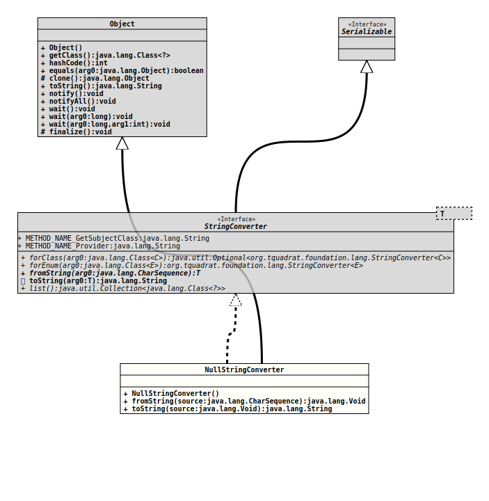

Class NullStringConverter
java.lang.Object
org.tquadrat.foundation.config.internal.NullStringConverter
- All Implemented Interfaces:
Serializable,StringConverter<Void>
@ClassVersion(sourceVersion="$Id: NullStringConverter.java 1061 2023-09-25 16:32:43Z tquadrat $")
@Deprecated(since="0.3.0",
forRemoval=true)
@API(status=DEPRECATED,
since="0.3.0")
public class NullStringConverter
extends Object
implements StringConverter<Void>
Deprecated, for removal: This API element is subject to removal in a future version.
Now obsolete.
This implementation of
StringConverter
is used only as a mock for
@SystemProperty.stringConverter()
and
@EnvironmentVariable.stringConverter().- Author:
- Thomas Thrien (thomas.thrien@tquadrat.org)
- Version:
- $Id: NullStringConverter.java 1061 2023-09-25 16:32:43Z tquadrat $
- Since:
- 0.0.2
- See Also:
- UML Diagram
-

UML Diagram for "org.tquadrat.foundation.config.internal.NullStringConverter"
{kind=link}
-
Field Summary
Fields inherited from interface org.tquadrat.foundation.lang.StringConverter
METHOD_NAME_GetSubjectClass, METHOD_NAME_Provider -
Constructor Summary
ConstructorsConstructorDescriptionDeprecated, for removal: This API element is subject to removal in a future version. -
Method Summary
Modifier and TypeMethodDescriptionfinal VoidfromString(CharSequence source) Deprecated, for removal: This API element is subject to removal in a future version.Deprecated, for removal: This API element is subject to removal in a future version.
-
Constructor Details
-
NullStringConverter
public NullStringConverter()Deprecated, for removal: This API element is subject to removal in a future version.
-
-
Method Details
-
fromString
Deprecated, for removal: This API element is subject to removal in a future version.- Specified by:
fromStringin interfaceStringConverter<Void>- Throws:
IllegalArgumentException
-
toString
Deprecated, for removal: This API element is subject to removal in a future version.- Specified by:
toStringin interfaceStringConverter<Void>
-